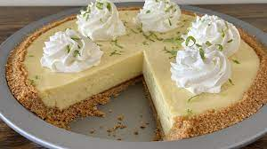

Key Lime Pie VII

Description
This recipe uses condensed milk and sour cream. Fabulously easy. . . a summertime favorite! If you have time, a homemade graham cracker crust is better! Garnish with whipped cream and thin slices of lime if you like.
Prep: 15 minutes
Cook: 8 minutes
Additional: 32 minutes
Total: 55 minutes
Servings: 8
Yield: 1 pie
Ingredients
- 1 (9 inch) prepared graham cracker crust
- 3 cups sweetened condensed milk
- 0.5 cup sour cream
- 0.75 cup key lime juice
- 1 tablespoon grated lime zest
Steps
- Step 1: Preheat oven to 350 degrees F (175 degrees C).
- Step 2: In a medium bowl, combine condensed milk, sour cream, lime juice, and lime rind. Mix well and pour into graham cracker crust.
- Step 3: Bake in preheated oven for 5 to 8 minutes, until tiny pinhole bubbles burst on the surface of pie. DO NOT BROWN! Chill pie thoroughly before serving. Garnish with lime slices and whipped cream if desired.
Enjoy!